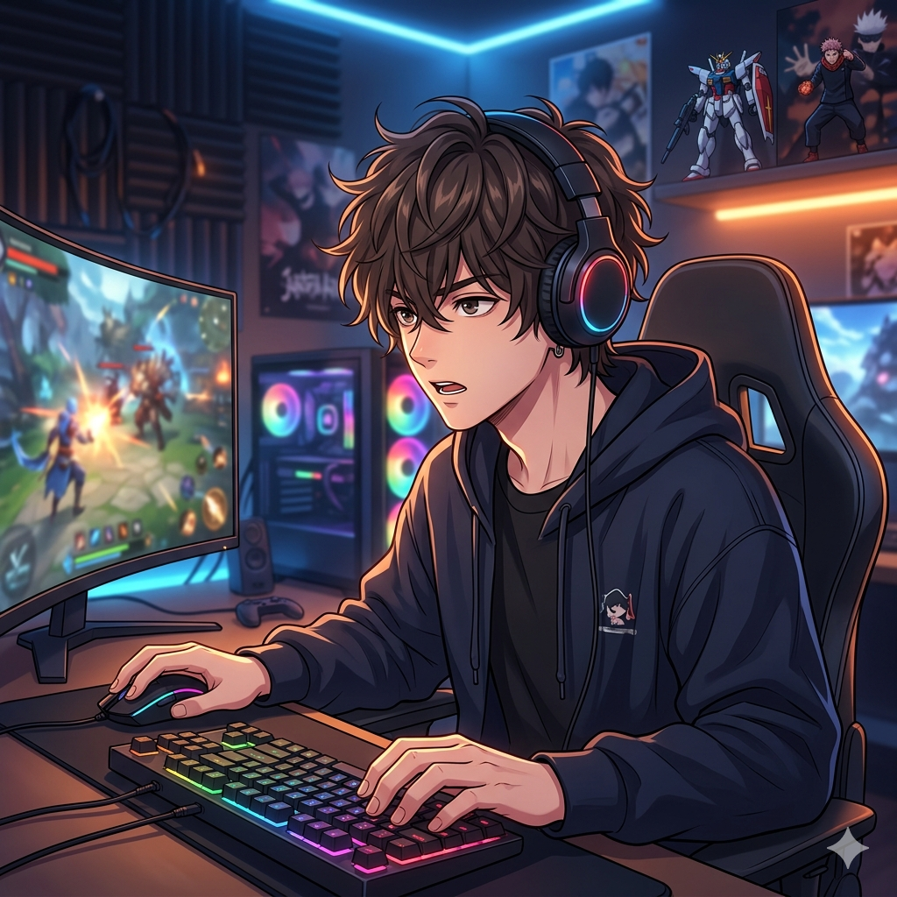

单机游戏 | 工作室 | 人物模型 | 捏脸换装 | 个人系统
这是一个默默生产和整合mod的个人网站，喜欢在晚上进行研究人物模型编辑、捣鼓成型的过程。 这里有很多塑造模型、换人物mod的资源，多样化才能更好玩。 不仅仅是捏脸，更是艺术。拒绝‘蛇精脸’，每一位角色都经过解剖学级别的骨骼微调。从瞳孔折射到指尖纹理，只为挑剔的 1% 玩家准备
h_s_2模型交流
我会在里面持续更新模型更新进展、工作室使用教程、动态观察、人物捏造路径和一些更即时的想法。 先看内容，再决定要不要进一步交流，这样对彼此都更高效。
这里不只有安装包，还有适配各种配置的底层优化逻辑。我会持续更新全网优质的人物卡和 MOD 资产。
无论是人物卡失效、还是插件冲突，进群即有现成的解决方案，让你的游戏体验直接拉满。
所有的资源都经过我实机测试。加入我们，你会看到如何从“能运行”进阶到“电影级画质”。
可以怎么合作
这里适合写你的目标用户是谁，以及你最擅长帮助他们解决什么问题。
适合想把 AI 接入内容、运营、资料整理、项目交付的人，重点解决“知道很多，但没有落地”的问题。
适合跨境从业者或准备入局的人，围绕运营提效、素材生产、内容增长和系统搭建做更直接的交流。
适合正在做资料产品、个人网站、内容账号或小型 AI 项目的人，重点不是完美，而是尽快跑通第一版。
适合谁看
想做副业、个人项目或知识产品，但卡在第一步，不知道怎么下手的人。
正在做跨境、电商、自媒体或 AI 工具应用，想提效和优化工作流的人。
不想只看“概念”和“趋势”，而是更关注真实过程、踩坑记录和执行复盘的人。
为什么信我
主业里有真实业务压力，副业里有真实变现需求，所以很多方法都是被结果倒逼出来的。
我会把“怎么开始、怎么试、怎么修正”讲出来，这比只展示结果更有参考价值。
无论是 AI 工具、内容分发还是资料产品，我更擅长做整合和落地，而不是单点炫技。
如何开始
先判断内容值不值得看，再判断项目值不值得信，最后再决定要不要联系，这样路径会更顺。
最快感受我的更新频率、关注方向和内容密度。
看清楚我过去做过什么、怎么做、为什么这些结果值得信。
想聊合作、咨询、项目或资源交换，直接来找我最省事。